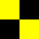

Flagg
Sjølivet består av mye kos og moro, men det er også flere farer ved å begi seg ut på bølgen blå. Kan du betydningen av disse viktige flaggene?
Dykkerflagg

Er man ute på sjøen og får øye på dette hvite og blå flagget, er det viktig at man senker farten og holder avstand. Dette flagget signaliserer at dykkere befinner seg i vannet, og man er nødt til å være varsom og ta hensyn til nettopp det.
Farlig gods

Rød er en farge som er kjent for å signalisere fare. Og dette knallrøde flagget er ikke ett unntak. Ved å heise dette flagget gjør båter som losser eller fører farlig gods omgivelsene rundt bevist på godset, og dermed redusere faren for unødvendig manuvrering som kan utsette den farlige lasten og påføre skade.
Bekreftende ja

De rød hvite og blå stripene signaliserer bekreftende til omgivelsene. Enkelt forklart kan man se på flagget som et bekreftende ja.
Hold avstand

Viser en båt dette flagget, forteller han at han har vansker med å manøvrere. Det er da best å holde god avstand og ikke gjøre situasjonen farlig eller stressende for den båtføreren som flagger.
Kurs til styrbord

En tykk blå stripe over en tykk rød signaliserer at båten bytter kurs mot styrbord.
Havari
Jeg har havari. Sett deg i forbindelse med meg
Jeg trenger los
Jeg trenger los. Når det gis av fiskefartøyer som driver fiske i grupper på fiskefeltet, betyr signalet: Jeg tar inn fiskeredskap.
Los ombord
Jeg har los ombord.
Kurs til babord
Jeg forandrer min kurs til babord.
Brann og farlig last
Jeg er i brann og har farlig last ombord. Hold godt klar av meg
Ønsker forbindelse
Jeg ønsker å opprette forbindelse med deg.
Stopp øyeblikkelig
Stopp fartøyet øyeblikkelig.
Jeg ligger stille
Mitt fartøy er stoppet og ligger stille.
Nektende nei
Nektende - nei, eller «Betydningen av den foregående gruppe skal leses nektende». Dette signal kan bare gis optisk eller med lyd. Ved tale eller radiosending skal signalet være «NO».
Mann overbord!
Enkelt og greit, Mann overbord!
kom om bord/fiskeredskaper sitterfast
I havn: Fartøyet skal gå og alle må komme om bord. I sjøen: Det kan benyttes av fiskefartøyer med følgende betydning: Mine fiskeredskaper har satt seg fast.
Mitt fartøy er friskt
Det er ikke konstatert smittefare og fartøyet ber om å få lege ombord som kan gi karantenelisens for samkvem med land: "My vessel is healthy and I require free pratique".
Motat ditt signal
Jeg har mottatt ditt signal.
Maskinkraft
Jeg bruker maskinkraften akterover.
Partråling
Hold klar av meg. Jeg driver partråling.
Stevner mot fare
Du stevner mot fare!
Tenger assistance
Jeg trenger assistanse.
Trenger legehjelp
Jeg trenger legehjelp
Stopp det du gjør
Stopp det du holder på med (eller har til hensikt å gjøre) og gi akt på mine signaler.
Anker
Jeg driver for ankeret.
Trenger slepebåt
Jeg trenger slepebåt. Når det gis av fiskefartøyer som driver fiske i grupper på fiskefeltet, betyr signalet: Jeg setter ut fiskeredskap.